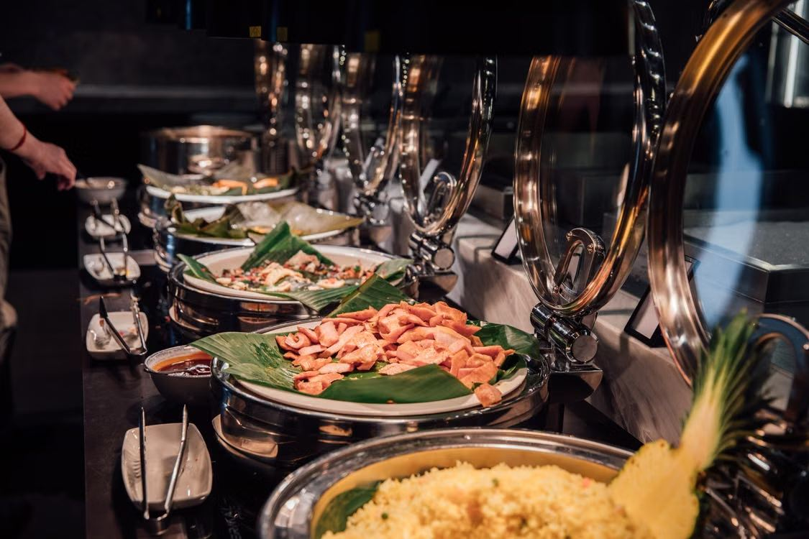
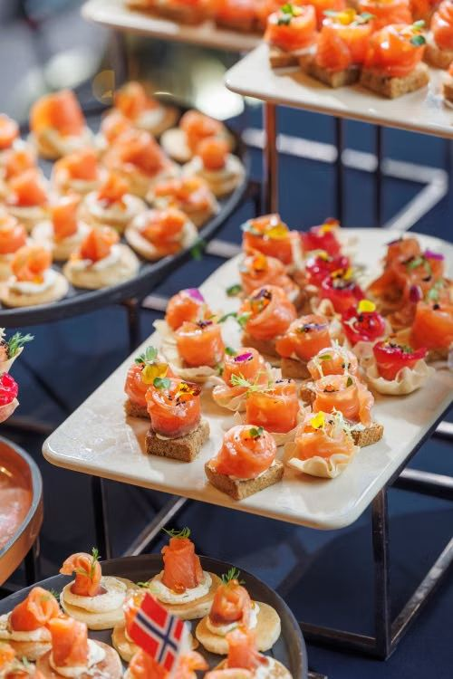
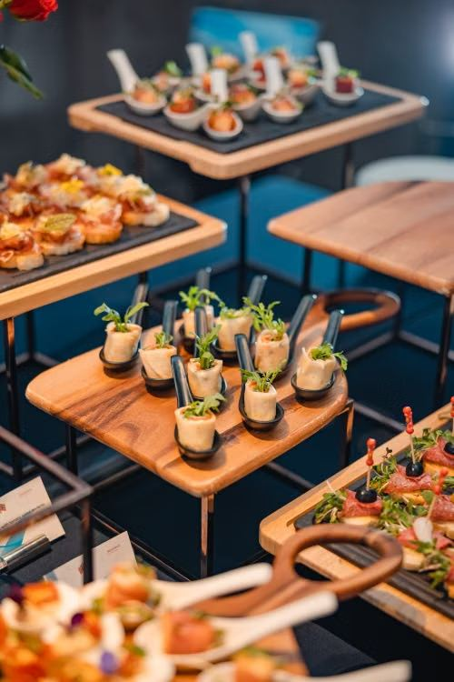
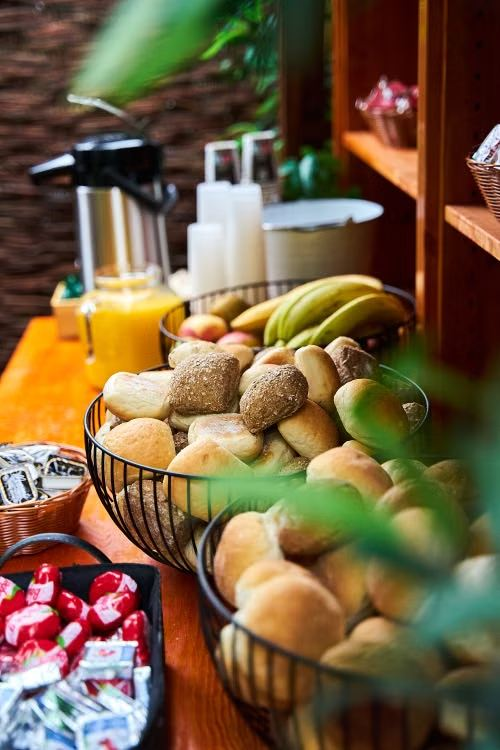

Recevez et régalez vos équipes comme il se doit. Plateaux chauds écoresponsables, cocktails et repas d'affaires 100% faits maison. Devis personnalisé sous 48h.
Demander un devisSéminaire, réunion, cocktail de fin d'année, inauguration ou déjeuner d'affaires : chez ÉOMA Traiteur d'Exception, nous savons que la qualité du repas reflète l'attention que vous portez à vos collaborateurs et à vos clients. Basés à Ris-Orangis en Essonne (91), nous intervenons dans toute l'Île-de-France et partout en France.
Notre cuisine est intégralement faite maison, à partir de produits frais, de saison et issus de producteurs français en circuit court. Une prestation professionnelle, ponctuelle et écoresponsable, pensée pour le rythme de l'entreprise.
Des plats chauds et écoresponsables livrés dans des boîtes isothermes réutilisables, prêts à être servis lors de vos réunions.
Pièces salées et sucrées, bar à cocktails et animations culinaires pour vos afterworks, inaugurations et soirées d'équipe.
Un menu soigné pour vos déjeuners clients et vos séminaires, servi et dressé avec la même exigence qu'une réception.
Nous nous occupons de toute la logistique pour que votre événement d'entreprise se déroule sans accroc.




Décrivez-nous votre besoin : type d'événement, nombre de convives, date. La cheffe vous répond avec un devis personnalisé sous 48h.
Demander mon devis entreprise